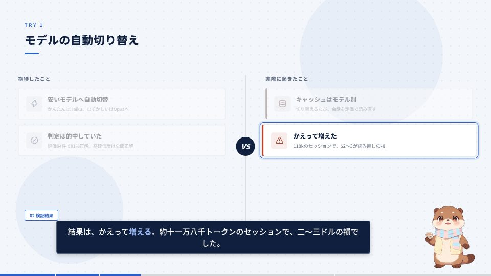
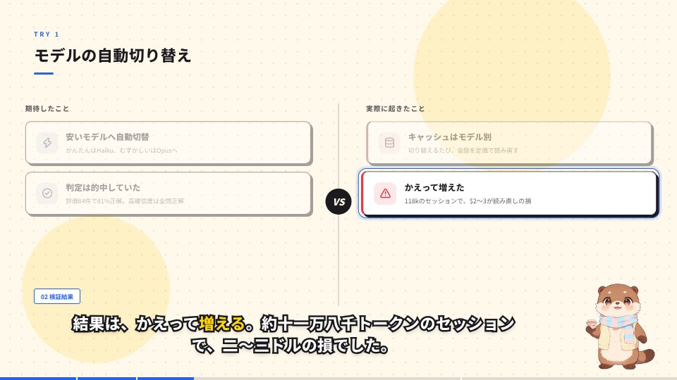
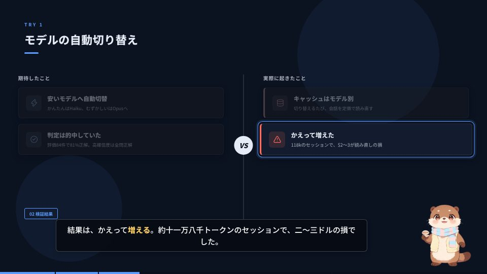
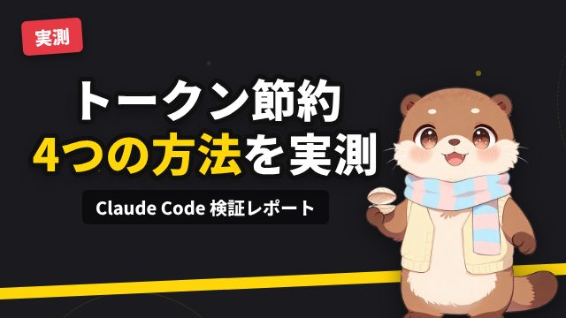
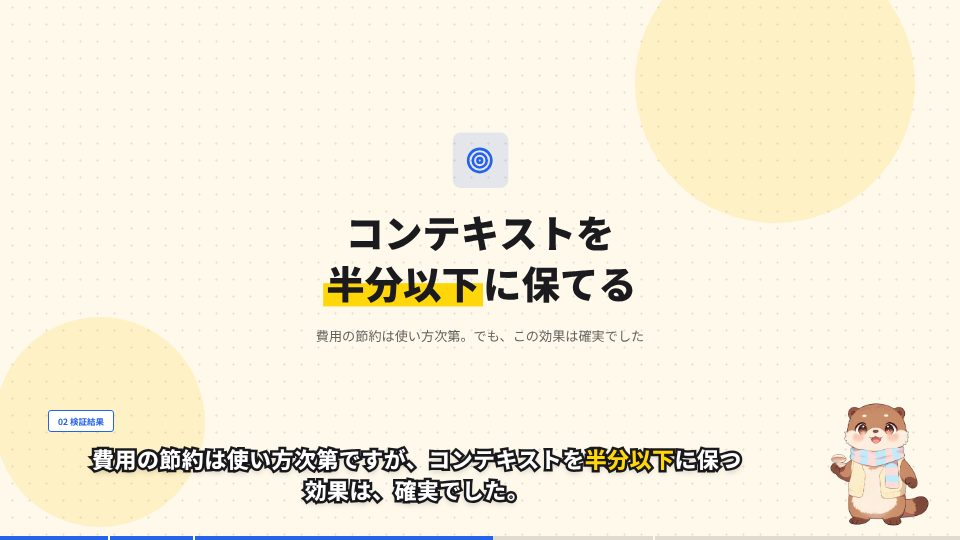
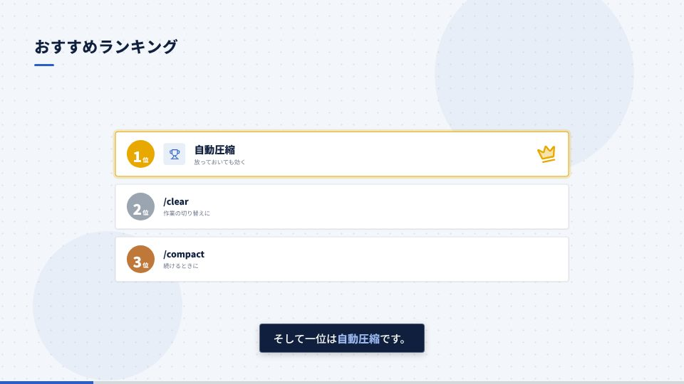

全体像
やることは「台本を用意する → 音声を作る → 動画に書き出す → 投稿用ファイルを作る」の4ステップです。台本を差し替えるだけで、音声の長さに合わせて字幕・図の出現・効果音・シーン切り替えのタイミングが自動で決まります。
作り方は3通り
| 方法 | 向いている人 | 必要なもの |
|---|---|---|
| ローカルで作る | 台本を手元で編集・プレビューしたい | Node.js 18以上、VOICEVOX Engine |
| LLMで台本も作る | 題材やURLから下書きを作りたい | 上記 + OPENAI_API_KEY |
| GitHub Actionsで作る | 手元に環境を作りたくない | GitHubリポジトリのみ |
YouTube向けの演出
次の演出は、台本に特別なことを書かなくても自動で入ります。どれも meta の設定で弱めたり止めたりできます。
要素がバネの動きで弾むように出現します（8種類）。見出しは1文字ずつ出て、背景はゆっくり漂い、カメラも少しずつズームし続けます。
スライド・ワイプ・ズーム・円形などで、前後のシーンが重なりながら切り替わります。音声とはずれません。
矢印が線を引くように伸びて点が流れる、数字がカウントアップする、棒グラフが伸びる、チェックが付く、比較の中央に VS、ランキング1位に王冠。
セリフに focus を書くと説明中の要素が拡大され、他は薄くなります。**語句** で字幕の色が変わります。
YouTube でおなじみの縁取り文字、または帯付きの字幕。テーマに合わせて自動で選ばれます。
出現の「ポン」、切り替えの「シュッ」、強調の「チーン」を自動で配置。BGM はナレーション中だけ音量が下がります。
右下にカワウソのキャラクターが出ます。口の動きは音声の大きさから自動で作られ、サムネイルにも登場します。自前の画像にも差し替えられます。
動画の途中に「チャンネル登録」のポップアップ（カーソルがクリックする演出）。最後は終了画面の枠付きエンディング。
テーマ（配色）は3種類

clean：落ち着いた青と紺。帯付き字幕
pop：太枠・黄色マーカー・縁取り字幕
dark：濃紺地のテック系準備する
-
依存パッケージを入れる
Node.js 18以上を用意し、リポジトリのルートで実行します。フォント（Noto Sans JP）と効果音は同梱済みで、レンダリング時に外部通信は不要です。
npm install -
VOICEVOX Engineを起動する
音声生成（
npm run audio）の前に、http://localhost:50021でエンジンを動かします。Dockerの場合
docker run -d --rm --name voicevox -p 127.0.0.1:50021:50021 voicevox/voicevox_engine:cpu-latestデスクトップアプリの場合：VOICEVOXを起動し、設定で「APIサーバー」を有効にします。
Windowsの注意-pの値を引用符で囲まないでください。cmd.exeでは引用符が値の一部になり、invalid IP addressエラーになります。Docker Desktopが起動していることも確認してください。 -
起動を確認する
curl http://localhost:50021/versionバージョンが表示されれば準備完了です。
エンジンなしで試すnpm run audio:mockなら無音WAVと概算の長さでタイムラインを作れます。レイアウトや演出の確認に便利です（キャラクターの口は一定のリズムで動きます）。
ローカルで作る
-
音声とタイムラインを作る
npm run audiopublic/script.jsonの各セリフを音声にしてpublic/audio/に保存し、各セリフの開始フレームと、口パク用の音量をpublic/timeline.jsonに書き出します。台本の要素IDの間違いもここで警告されます。 -
プレビューで確認する
npm run devRemotion Studio（http://localhost:3000）が開きます。音声・字幕・演出を再生して確認します。左の一覧の
Thumbnailでサムネイルも確認できます。 -
MP4に書き出す
npm run renderout/video.mp4が出力されます。動作が重いときはnpm run render -- --concurrency=4のように同時実行数を指定します。
script.json を編集したら、プレビューや書き出しの前に npm run audio を再実行します。しないと timeline.json が古いままになり、Remotionがエラーを出します。
コマンド早見表
| コマンド | 役割 |
|---|---|
npm run script -- "題材" | LLMで台本を生成（任意） |
npm run audio | VOICEVOXで音声生成 + タイムライン作成 |
npm run audio:mock | 無音WAVで代用（エンジン不要） |
npm run dev | Remotion Studioでプレビュー |
npm run render | MP4に書き出し（out/video.mp4） |
npm run thumbnail新 | サムネイルを書き出し（out/thumbnail.png） |
npm run youtube新 | 概要欄の目次・字幕ファイルを作成（out/youtube/） |
npm run build:youtube新 | render → thumbnail → youtube をまとめて実行 |
npm run sfx新 | 効果音を作り直す（音を変えたいときだけ） |
npm run typecheck | 型チェック |
YouTubeに投稿する
動画を書き出したら、投稿に使うファイルをまとめて作ります。
npm run thumbnail # → out/thumbnail.png
npm run youtube # → out/youtube/description.txt, captions.srt, metadata.json| ファイル | 使い方 |
|---|---|
out/video.mp4 | YouTube Studio にアップロードする本体 |
out/thumbnail.png | 「サムネイル」にアップロード（1280×720）。文言は meta.thumbnail で指定 |
out/youtube/description.txt | タイトルと目次。目次を概要欄に貼ると、YouTube のチャプター（再生バーの区切り）になる |
out/youtube/captions.srt | 「字幕」→「ファイルをアップロード」で使う。自動字幕より正確 |
out/youtube/metadata.json | タイトル・尺・チャプターの機械向けデータ |

**強調** した語句は色が変わります。section）の位置で区切られます。YouTube の条件（0:00 から始まる・3つ以上・各10秒以上）を満たすよう自動で調整し、満たせないときは警告を出します。
台本を書く
台本は public/script.json です。先頭に動画全体の設定（meta）を書き、その下に1シーン＝1画面の scenes を並べます。シーンの中には複数のセリフを並べます。
{
"meta": { // 動画全体の設定（すべて省略可）
"title": "動画タイトル",
"theme": "pop"
},
"scenes": [
{
"id": "flow", // シーンID（音声ファイル名に使う）
"layout": "flow", // レイアウト種別（下表）
"label": "FLOW", // 左上の英字ラベル（省略可）
"heading": "処理の流れ", // 見出し（title / section / outro では省略）
"transition": "wipe", // このシーンに入るときの切り替え（省略可）
"content": { ... }, // レイアウトごとの中身
"lines": [
{
"text": "ナレーション文。**強調**した語句は字幕で色が変わる",
"reveal": ["step-1"], // このセリフの開始時に出す要素のID
"focus": ["step-1"] // このセリフの間だけ強調する要素のID（省略可）
}
]
}
]
}以前の形式（meta なし・reveal だけの台本）もそのまま使えます。その場合は clean テーマで、アニメーションは既定値になります。
セリフ（lines）に書ける項目
| キー | 説明 |
|---|---|
text | 字幕に表示し、読み上げる文。**語句** で囲むと字幕の強調色になる（読み上げには影響しない） |
reveal | このセリフの開始時に出現させる要素ID。複数書くと少しずつ時間差で出る |
focus新 | このセリフの間だけ拡大＋枠で強調する要素ID。他の要素は薄くなる |
speech新 | 読み上げだけ別の文にしたいとき（英単語の読みを直すなど）。字幕は text のまま |
sfx新 | セリフ開始時の効果音。pop / whoosh / ding / click / none。省略時は reveal があれば pop |
reveal と focus の考え方
revealに書いた要素は、そのセリフが始まる瞬間に出現します。revealに書かれない要素は、シーンの冒頭に順番に出現します。focusは「今この要素の話をしている」ことを示します。表やカードが多い画面で、視線を誘導するのに使います。- 存在しない要素IDを書くと、
npm run audioとプレビュー時に、使えるIDの一覧付きで警告が出ます。 - シーンには
chapter（左下の章タグ）とbadge（右上のバッジ）も付けられます。
レイアウト一覧
| layout | 用途と content の中身 | reveal / focus に使えるID | 動き |
|---|---|---|---|
title | タイトル画面。kicker? / title（\n で改行・**強調** 可）/ subtitle? | なし | タイトルが1文字ずつ弾む |
section | 章扉。number? / title / subtitle? | なし | 章番号が「ドン」と落ちる |
compare | 左右比較。leftTitle / rightTitle / left[] / right[]（各項目 { id, icon?, title, body?, tone? }） | 各項目の id | 左右から滑り込み、中央に VS |
flow | 手順の流れ。steps[]（2つ以上） | 各stepの id、矢印 arrow-1〜 | 矢印が線を引くように伸び、点が流れる |
inputOutput | 入力→変換→出力。input / transform / output | 各 id、矢印 arrow-1, arrow-2 | 変換ボックスが脈打つ |
bullets | 縦の箇条書き。items[] | 各項目の id | 左から滑り込む |
stats | 数字を強調するカード（2〜4枚）。items[] は { id, value, label, body? } | 各項目の id | 数字がカウントアップ |
table | 比較表。headers[] + rows[] + source? | 各行の id | 行が滑り込む |
bars | 横棒グラフ。items[] + caption? | 各項目の id、caption | バーが伸び、数値がカウントアップ |
checklist | 番号付きチェックカード。items[] は { id, text, note? } | 各項目の id | チェックが「ポン」と付く |
axes | 空の座標軸の図解。xAxis / yAxis / hint? | axes、hint | 軸が線を引くように描かれる |
statement新 | 一文を大きく見せるキメ画面。text（**強調** にマーカー）/ sub? / icon? | text、sub | 1文字ずつ弾み、マーカーが引かれる |
ranking新 | ランキング（2〜5個、1位から順に書く）。items[] は { id, rank?, icon?, title, body? } | 各項目の id | 下位から出現。1位に王冠と光 |
image新 | 画像を大きく見せる。src（public/ からの相対パスかURL）/ caption? / fit? | image、caption | 画像がゆっくりズーム＆パン |
outro新 | エンディング。title? / message? / subscribe? / endScreen? | なし | 登録ボタンのクリック演出、終了画面の枠 |

statement：結論や驚きの事実を大きく見せる
ranking：1位は王冠付きで強調アイコンと素材集
iconには約85種のキー（check、search、trophy、sparkles、brain、bellなど）が使えます。一覧はsrc/components/IconBox.tsxのREGISTRYにあり、追加もそこに書くだけです。- 書き方の見本は
public/script.json（約9分のデモ。pop テーマ・キャラクター・登録ポップアップ・statement・outro 入り）とtemplates/sample-claude-code-7scenes.json（7シーン版・以前の形式）。シーン単位でコピーして使えます。
長さの目安
10分の動画はナレーション約3,000字、25〜30シーン・80〜90セリフが目安です。長い動画は section（章扉）と chapter タグで章立てすると見やすくなり、YouTube のチャプターにもなります。10分を超えると npm run audio が警告を出します（止まりはしません）。outro は YouTube の終了画面（最大20秒）に使えるよう、5秒以上にするのがおすすめです。
動画全体の設定（meta）
台本の先頭の meta に書きます。すべて省略でき、省略時は既定値が使われます。
| キー | 既定値 | 説明 |
|---|---|---|
title | title シーンのタイトル | 動画タイトル。概要欄ファイルとサムネイルに使う |
theme | clean | 配色。clean / pop / dark |
transition | slide | シーン切り替え。slide / slideUp / wipe / zoom / circle / fade / none（シーンごとに上書き可） |
animation | auto | 要素の出現。auto（レイアウトのおすすめ）/ fadeUp / pop / slideLeft / slideRight / zoom / blur / flip / none（シーンごとに上書き可） |
camera | subtle | シーン中のゆっくりズーム。none で止める |
animatedBackground | true | 背景の模様と図形を漂わせる |
progressBar | true | 画面下端の進行バー（章の区切り付き） |
subtitle | { "enabled": true, "style": "auto" } | style は box（帯）/ outline（縁取り）/ auto（テーマ既定）。YouTube の字幕機能だけ使うなら enabled: false |
sfx | { "enabled": true, "volume": 0.5 } | 効果音。reveal（出現時の pop）と transition（切り替えの whoosh）を個別に false にもできる |
bgm | なし | { "src": "bgm/track.mp3", "volume": 0.18, "duckVolume": 0.07 }。public/ に置いた音源をループし、ナレーション中は duckVolume まで下げる |
avatar | カワウソ（同梱） | 右下で喋るキャラクター。省略時は同梱のカワウソが出る。false で非表示。自前の画像なら { "type": "image", "open": "avatar/open.png", "half": "avatar/half.png", "closed": "avatar/closed.png" }（half は省略可）。{ "type": "builtin" } で画像なしの丸顔キャラ。name で名札、size で大きさ |
subscribePopup | なし | { "sceneId": "sec2" }。そのシーンの冒頭に約4秒、登録ボタンの演出を右上に出す |
thumbnail | なし | { "text": "大きな文字\n**強調**", "sub": "…", "badge": "…", "image": "…" }。省略時は title シーンから作る |
設定例
"meta": {
"title": "Claude Codeのトークン節約 — 四つの方法を実測した結果",
"theme": "pop",
"transition": "slide",
"bgm": { "src": "bgm/track.mp3" },
"subscribePopup": { "sceneId": "sec2" },
"thumbnail": { "text": "トークン節約\n**4つの方法**を実測", "badge": "実測" }
}"animation": "fadeUp"、"transition": "fade"、"camera": "none"、"animatedBackground": false にすると、落ち着いた解説動画向けの演出になります。
台本を自動生成する
OpenAI互換のChat Completions APIで、プロンプトまたは記事URLから台本を作れます。YouTube 向けの構成（タイトル → 章立て → キメの画面やランキングで山場 → エンディング）になるよう指示してあり、強調（**語句**）や focus、動画タイトル・サムネイルの文言も提案させます。
export OPENAI_API_KEY="sk-..."
# プロンプトから
npm run script -- "Remotionの魅力を解説する動画の台本を作って"
# 記事URLから
npm run script -- --url https://example.com/article
# テーマも同時に指定
npm run script -- --theme pop "…"
# 続けて音声 → 書き出し → 投稿用ファイル
npm run audio && npm run build:youtube| 環境変数 | 既定値 | 説明 |
|---|---|---|
OPENAI_API_KEY | （必須） | APIキー |
OPENAI_BASE_URL | https://api.openai.com/v1 | 互換エンドポイント（Ollamaなら http://localhost:11434/v1） |
SCRIPT_MODEL | gpt-4o-mini | モデル名（JSON mode対応を推奨） |
- 生成結果は
public/script.jsonを上書きします。ただし既存のmetaの見た目の設定（テーマ・BGM・キャラクターなど）は引き継ぎ、タイトル・サムネイル文言・登録ポップアップの位置だけを差し替えます。 - 形式の間違いや、存在しない要素IDの指定があると、エラー内容を渡して1回だけ自動リトライします。
- URL指定は本文テキストを抽出します。JavaScriptで描画されるページやログイン必須のページは取得できません。その場合は本文をコピーしてプロンプトとして渡してください。
- 生成後は内容を確認・手直ししてから
npm run audioを実行してください。
GitHub Actionsで作る
手元に環境を作らずに、GitHub上で音声生成からレンダリング、投稿用ファイルの作成まで実行できます。ワークフローは .github/workflows/generate-video.yml です。
起動方法
-
手動で実行する
GitHubの Actions タブ →
generate-video→ Run workflow を開き、source_typeを選びます。source_type 動作 noneリポジトリの public/script.jsonをそのまま動画化prompt入力したプロンプトからLLMで台本を作って動画化 url入力したURLの記事から台本を作って動画化 台本を生成するときは
theme（keep/clean/pop/dark）も選べます。keepは今の台本の設定のままです。prompt/urlを使うには、リポジトリの Settings → Secrets and variables → Actions にOPENAI_API_KEYを登録します。任意で Variables にOPENAI_BASE_URL/SCRIPT_MODELも設定できます。 -
APIから実行する
repository_dispatchで外部から起動できます（repo権限のPATが必要）。client_payloadにthemeも指定できます。curl -X POST \ -H "Authorization: Bearer <YOUR_PAT>" \ -H "Accept: application/vnd.github+json" \ https://api.github.com/repos/<user>/<repo>/dispatches \ -d '{"event_type":"generate-video","client_payload":{"source_type":"url","source":"https://example.com/article","theme":"pop"}}' -
完成した動画を受け取る
実行が終わったら、そのRunのページ下部の Artifacts から
videoをダウンロードします。中身はvideo.mp4・thumbnail.png・youtube/（概要欄の目次と字幕）で、保存期間は30日です。台本を自動生成した場合は、script.jsonとtimeline.jsonもリポジトリにコミットされます。
ワークフローの流れ
- VOICEVOX Engineをサービスコンテナで起動し、応答するまで待つ
npm ciと Remotion用ブラウザの準備- （prompt / url のとき）台本を生成
npm run audio→npm run rendernpm run thumbnail→npm run youtube- 動画・サムネイル・投稿用ファイルをアーティファクトに保存
細かい設定を変える
声と話速（voicevox.config.json）
| キー | 既定値 | 説明 |
|---|---|---|
endpoint | http://localhost:50021 | VOICEVOX EngineのURL |
speakerId | 3 | 話者ID（3 = ずんだもん ノーマル）。一覧は curl http://localhost:50021/speakers |
speedScale | 1.0 | 話速。1.2 などで速くなる |
間の長さとアニメーション
| 項目 | 値 | 場所 |
|---|---|---|
GAP_BETWEEN_LINES_SEC | 0.3秒（セリフ間） | shared/timing.ts |
SCENE_LEAD_SEC | 0.6秒（シーン開始→最初のセリフ） | shared/timing.ts |
SCENE_TAIL_SEC | 0.8秒（最後のセリフ→シーン終了） | shared/timing.ts |
TRANSITION_FRAMES | 18フレーム（シーン切り替えの長さ。半分は LEAD / TAIL 以下） | shared/timing.ts |
バネの硬さ（SPRINGS） | 出現の弾み具合 | src/animation/presets.ts |
| トランジションの見た目 | slide / wipe などの動き | src/animation/transitions.ts |
| テーマの配色・カードの枠や影 | clean / pop / dark | src/theme/index.ts |
| 効果音の音色 | pop / whoosh / ding / click | scripts/lib/sfx.ts（変更後に npm run sfx） |
shared/timing.ts を変えたら npm run audio を再実行してください。新しいテーマを足すときは src/theme/index.ts の THEMES と、src/schemas.ts の themeNameSchema に追加します。
困ったとき
| 症状 | 原因と対処 |
|---|---|
| 「VOICEVOX Engine に接続できません」 | エンジンが未起動です。準備のコマンドで起動するか、npm run audio:mock を使います。 |
docker: invalid IP address | -p の値を引用符で囲んでいます。引用符なしで実行してください。 |
| 「timeline.json に … 対応するエントリがありません」 | 台本を直した後に npm run audio を実行していません。再実行します。 |
| 「要素ID "…" はシーン "…" にありません」 | reveal / focus の綴りの間違いです。メッセージに使えるIDの一覧が出ます。 |
| キャラクターを別の画像にしたい | 背景が透明な PNG を public/avatar/ に置き、meta.avatar でファイル名を指定します。口を開けた画像と閉じた画像の2枚（＋任意で半開き）が必要です。 |
| キャラクターの口が動かない・一定のリズムで動く | 古い timeline.json か、audio:mock で作ったタイムラインです。npm run audio を実行すると音声に合わせて動きます。 |
| 音声と表示がずれる | npm run audio をやり直します。タイムラインは音声の実寸から再計算されます。 |
| 動きが多すぎる・目が疲れる | meta で animation・transition・camera・animatedBackground を控えめにします。 |
| チャプターが YouTube で認識されない | 章が3つ未満か、10秒未満の章があります。section シーンを増やしてください（npm run youtube が警告を出します）。 |
| レンダリングが遅い・落ちる | npm run render -- --concurrency=4 のように同時実行数を下げます。 |
| Actionsで「OPENAI_API_KEY が未設定」 | Secretsに登録するか、source_type=none で既存の台本を使います。 |
ファイル構成
├── public/
│ ├── script.json 台本（差し替え対象）
│ ├── timeline.json 生成物: フレーム計算の結果 + 口パク用の音量
│ ├── audio/ 生成物: セリフごとのWAV
│ ├── sfx/ 効果音（同梱）
│ ├── avatar/ キャラクター画像（口: open / half / closed）
│ └── fonts/ Noto Sans JP
├── scripts/ 音声生成・台本生成・投稿用ファイル・効果音の合成
├── shared/ 音声側とRemotion側の共通処理（timing.ts / markup.ts）
├── templates/ 台本サンプル
├── docs/ この手順書
└── src/
├── theme/ テーマ（clean / pop / dark）
├── animation/ バネ・出現の動き・トランジション
├── context/ シーンごとの reveal / focus のタイミング
├── components/ 字幕・音声・キャラクター・登録ボタンなどの部品
├── layouts/ 15種類のレイアウト
└── Thumbnail.tsx サムネイル